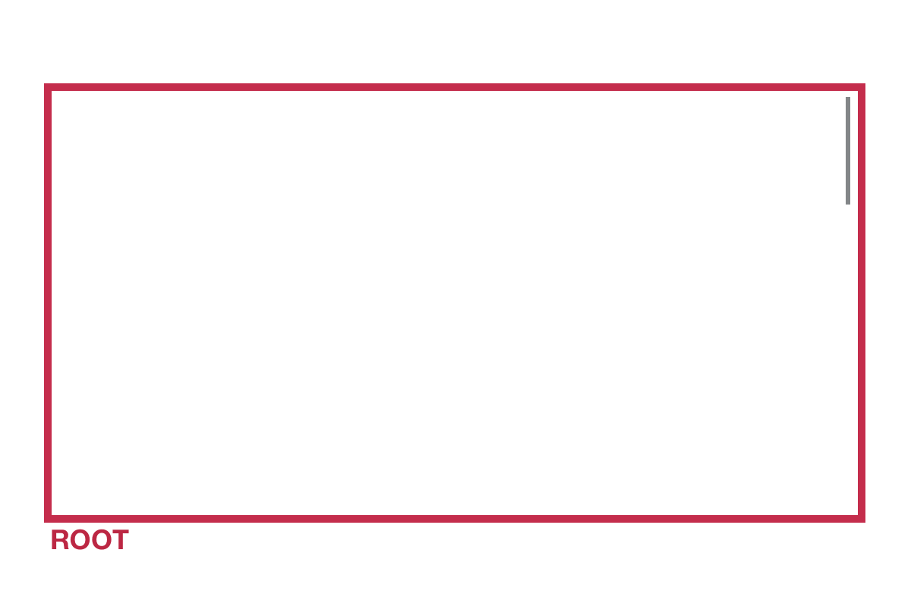
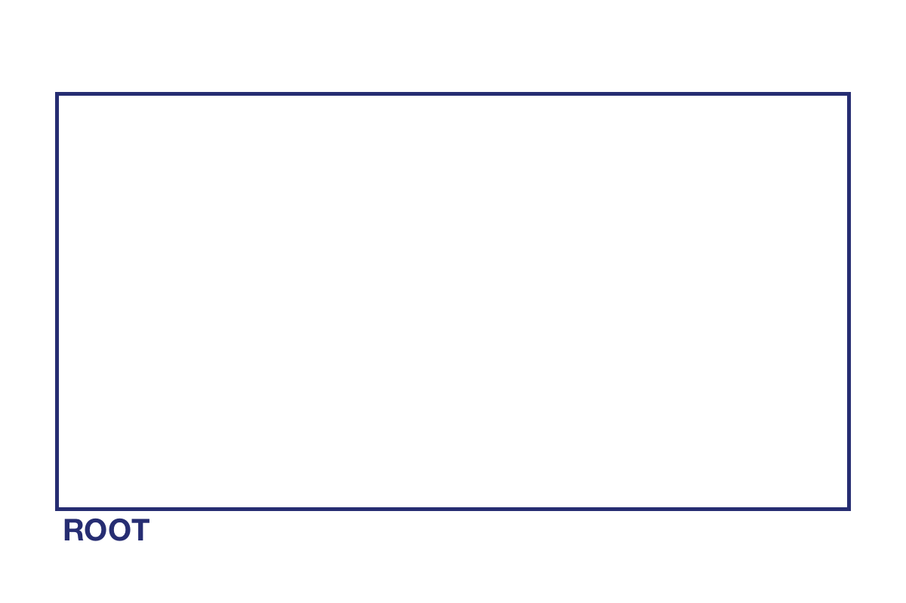
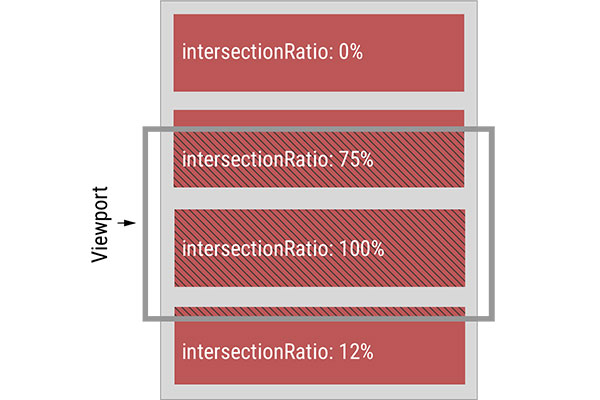

1. Вступ
Сучасні веб-сторінки активно використовують подію скрол для виявлення елементів,
видимих в межах поточної області перегляду (viewport). Скролінг може запускати
відкладені завантаження зображень і даних, анімацію елементів, підтримувати
нескінченні завантаження вмісту і багато іншого. На жаль, подія прокрутки й
розрахунок геометрії елементів (виклики Element.getBoundingClientRect()) дуже
ресурсомісткі операції виконуються в основному потоці. Це викликає проблеми в
реалізації і часто призводить до зниження продуктивності браузера.
Intersection Observer API був створений як розв'язання цих проблем і новий
спосіб обробки подій прокрутки. Цей інтерфейс надає можливість спостерігати за
заданими елементами й спрощує реалізацію відстеження зміни в їх перетині з
заданим елементом-предком або самим вікном перегляду (viewport), тобто стеження
за видимістю елемента.
Intersection Observer передає управління подіями
перетину браузеру, який керує цими подіями більш ефективно, покращуючи
продуктивність.
2. Концепція Intersection Observer
Розглянемо кілька ключових термінів, що використовуються для визначення будь-якого примірника Intersection Observer.
Observer (спостерігач, обзервер) - результат виклику класу
IntersectionObserver, його екземпляр, об'єкт з методами.
Root (корінь, контекст) - це елемент, який очікує перетину елемента-мети. Основа спостерігача. За замовчуванням це вікно перегляду браузера (Viewport), але може використовувати будь-який інший елемент, якщо цього вимагає задача.
Target (ціль) - елемент, за яким стежить спостерігач і оповіщає про його входження в корінь. Метою може бути будь-який елемент. Один спостерігач може відстежувати безліч різних цілей.

При розрахунку перетинів, Intesection Observer розглядає всі елементи як прямокутник, незалежно від їх зовнішнього вигляду. Ці прямокутники розраховуються як найменші з можливих, при цьому вони містять ввесь цільовий вміст
Можна збільшити або зменшити розміри кордонів кореня для розрахунку перетинів.
Для цього використовується rootMargin. При цьому геометрія кореня не
змінюється, зміни стосуються тільки розрахунків кордонів перетину.

3. Використання Intersection Observer
Досить створити новий екземпляр класу IntersectionObserver, приймає два
аргументи - callback-функцію й об'єкт налаштувань.
IntersectionObserver(callback, options)
За замовчуванням, колбек буде викликатися, коли елемент з'являється і зникає з
області видимості. Першим аргументом колбек отримає масив об'єктів
IntersectionObserverEntry, кожен з яких містить набір властивостей елемента,
показуваного в області видимості: boundingClientRect, intersectionRatio,
intersectionRect, rootBounds, target і time. Другим агументом в колбек
передається посилання на сам екземпляр обзервер.
Об'єкт налаштувань дозволяє задати опції, з якими буде створено обзервер. Можна,
можливо змінити контекст (root), який за замовчуванням дорівнює viewport,
задати відступи від кордонів контексту (rootMargin) - за замовчуванням 0px. І
поріг входження (Threshold) у вигляді масиву значень. Поріг означає, скільки
відсотків елемента має потрапити в зону видимості для спрацьовування колбека.
Значення можуть варіюватися від 0.01 до 1.0.

Примірник класу це спостерігач, об'єкт з набором методів, за допомогою яких можна стежити за DOM-елементами.
const options = {
rootMargin: '50px',
threshold: 0.5,
};
const onEntry = (entries, observer) => {
entries.forEach(entry => {
// тут можна писати логіку для перевірки входження
});
};
const observer = new IntersectionObserver(onEntry, options);
Після того як екземпляр IntersectionObserver створений, необхідно надати один
або кілька цільових елементів для спостереження. Для цього на примірників
викликається метод observe(elem), який приймає посилання на DOM-елемент за
яким необхідно спостерігати. Коли елемент увійде (або вийде) в область видимості
(root), буде викликана callback-функція передана при створенні примірника.
const options = {
rootMargin: '50px',
threshold: 0.5,
};
const onEntry = (entries, observer) => {
entries.forEach(entry => {
// тут можна писати логіку для перевірки входження
});
};
const observer = new IntersectionObserver(onEntry, options);
observer.observe(elem);
4. Поліфіл Intersection Observer
Хоча Intersection Observer API підтримується всіма останніми версіями сучасних
браузерів, слід подбати про поліфілії, щоб він гарантовано працював у всіх
актуальних версіях. Поліфем від WICG можна взяти з
цього GitHub-репозиторія.
Найпростіший спосіб додати Поліфем - це використати polyfill.io. Він завантажує тільки зазначені поліфілії, і тільки тоді, коли браузер вимагає цього. Це допомагає звести вагу сторінки до мінімуму, але дозволяє поліфілу працювати без подальшого налаштування.
Єдиним недоліком поліфілла є те, що ви не отримаєте переваг в продуктивності в старих браузерах, але скрипт буде працювати і користувач зможе взаємодіяти з веб-сторінкою.